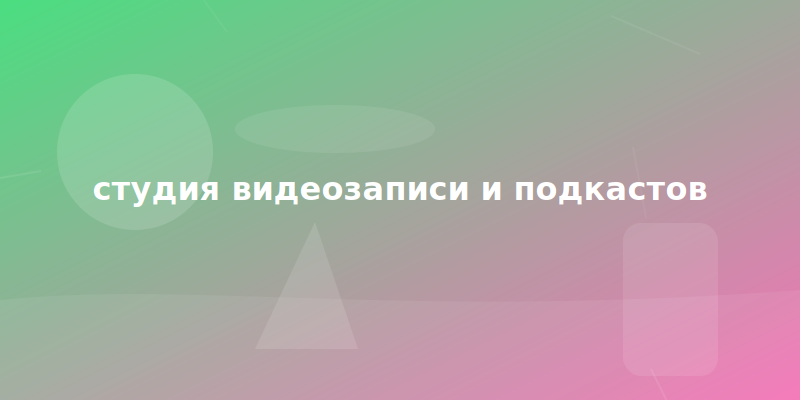

**Создайте незабываемый контент с помощью студии видеозаписи и подкастов**
В наше время коммунитарные platforms, такие как YouTube, Spotify и Apple Podcasts, стали ключевыми каналами для распространения информации и развлечения. Это означает, что запись подкаста и создание видеоматериалов стало более важным, чем когда-либо. В этой статье мы будем рассматривать студии видеозаписи и подкастов, которые помогут вам создать высококачественный контент и достижения вашей аудитории.
**Что такое студия видеозаписи и подкастов?**
Студия видеозаписи и подкастов - это специализированная организация, которая предлагает услуги по записи и производству видео- и аудиоконтента. Их специалисты имеют zengin опыт в создании контента для различных платформ, включая YouTube, TikTok, Facebook, Instagram, Spotify и Apple Podcasts. Они могут помочь вам создать высококачественный контент, который будет привлекать и удерживать вашу аудиторию.
**Почему вам нужна студия видеозаписи и подкастов?**
Существует несколько причин, почему вам нужна студия видеозаписи и подкастов:
* Вам нужно создать контент, который будет привлекать и удерживать вашу аудиторию.
* Вам нужно повысить свою популярность и авторитет в вашей отрасли.
* Вам нужно создать контент, который будет соответствовать вашим маркетинговым целям.
* Вам нужно иметь возможность распространять ваш контент на различных платформах.
**Услуги студии видеозаписи и подкастов**
Студии видеозаписи и подкастов предлагают широкий спектр услуг, включая:
* Запись подкаста: они могут помочь вам записать и редактировать ваш подкаст, используя профессиональное оборудование и программное обеспечение.
* Создание видеоматериалов: они могут помочь вам создать высококачественный видеоматериал, используя профессиональное оборудование и программное обеспечение.
* Редактирование видео и аудио контента: они могут помочь вам редактировать и улучшить ваш контент, используя профессиональные программы и оборудование.
* Дизайн и озвучка: они могут помочь вам создать дизайн и озвучку для вашего контента, чтобы он выглядел более привлекательным и интересным.
**Примеры студий видеозаписи и подкастов в России**
В России есть несколько студий видеозаписи и подкастов, которые предлагают высококачественные услуги по записи и созданию контента. Некоторые из них:
* Studio 101: это студия видеозаписи и подкастов, которая предлагает услуги по записи и созданию контента для различных платформ.
* Piterstudio: это студия видеозаписи и подкастов, которая предлагает услуги по записи и созданию контента для различных платформ.
* Moscow Studio: это студия видеозаписи и подкастов, которая предлагает услуги по записи и созданию контента для различных платформ.
**Заключение**
Студия видеозаписи и подкастов - это важная часть создания высококачественного контента для вашей аудитории. Они могут помочь вам создать контент, который будет привлекать и удерживать вашу аудиторию. Если вы хотите создать контент, который будет соответствовать вашим маркетинговым целям, вам нужно найти профессиональную студию видеозаписи и подкастов, которая сможет помочь вам достичь этих целей.